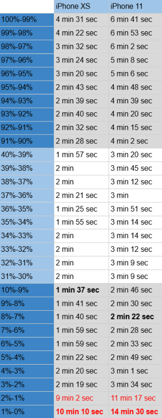

Στον παραπάνω πίνακα βλέπουμε τα αποτελέσματα της έρευνας. Με μαύρο bold είναι γραμμένα τα μικρότερα χρονικά διαστήματα ανά κινητό και με bold κόκκινο τα μεγαλύτερα. Ακόμη με κόκκινο είναι γραμμένες η μετρήσεις με μεγάλη απόκλιση από τις υπόλοιπες.
Οι ενδείξεις του χρονομέτρου είναι παρόμοιες στο εύρος 90%-10%. Για αυτόν τον λόγο παρατίθενται ενδεικτικά οι ενδείξεις που αφορούν το εύρος 40%-30%.
ΣΗΜΑΝΤΙΚΟ! Οι μετρήσεις αυτές δεν ισχύουν για κάθε iPhone XS και iPhone 11. Ωστόσο, αποτελούν ένα δείγμα του ότι αυτό συμβαίνει με καθορισμε΄νη αναλογία σε άλλες συσκευές, που εξαρτάται από την υγεία της μπαταρίας, από τη χρήση του τηλεφώνου κλπ..
Αξίζει να σημειωθεί πως το βίντεο που χρησιμοποιήθηκε είναι το ακόλουθο: https://youtu.be/i5_kLgSn_SE?si=KCcD-Y8DFqUYMXQm
Τέλος, μην ξεχάστε να μας αξιολογήσετε! Δεν απαιτεί πολύ χρόνο! Κάντε κλικ στο ακόλουθο link: Πατήστε εδώ